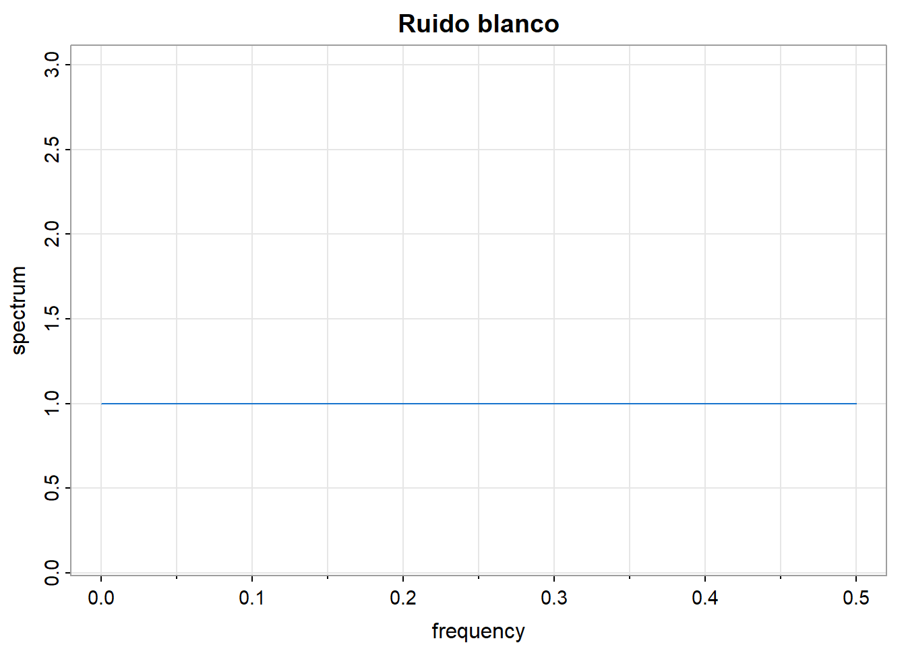
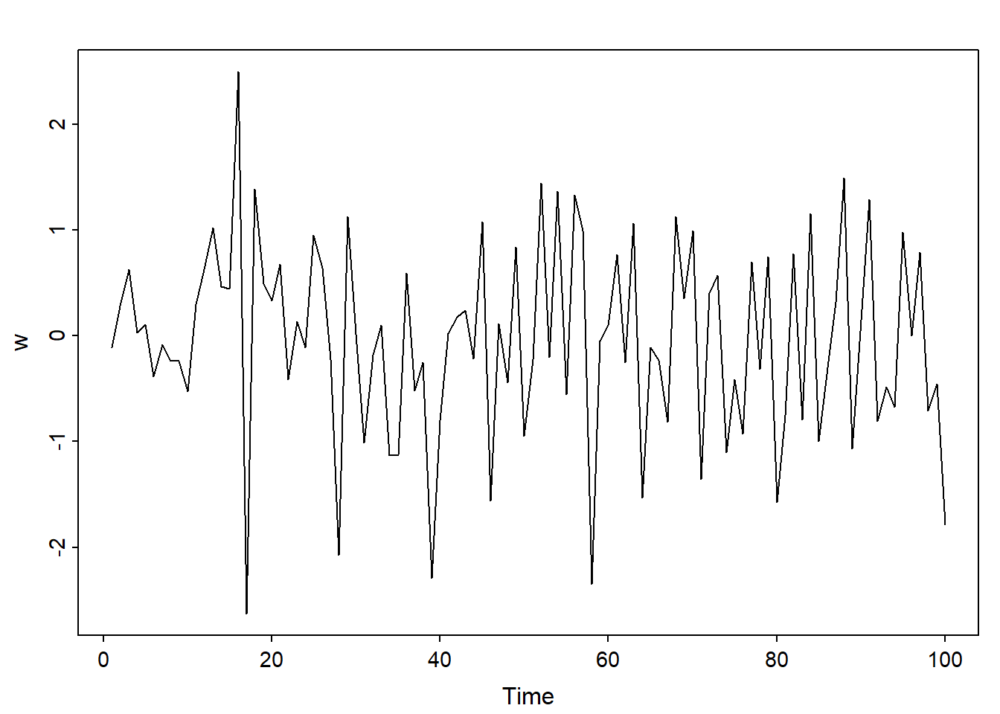
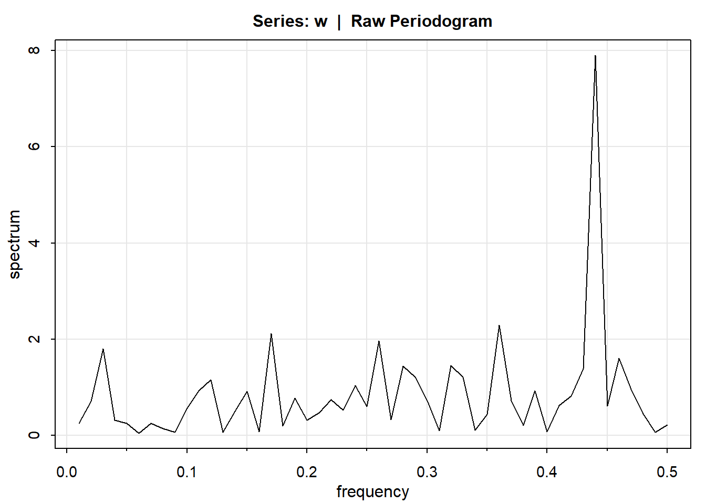
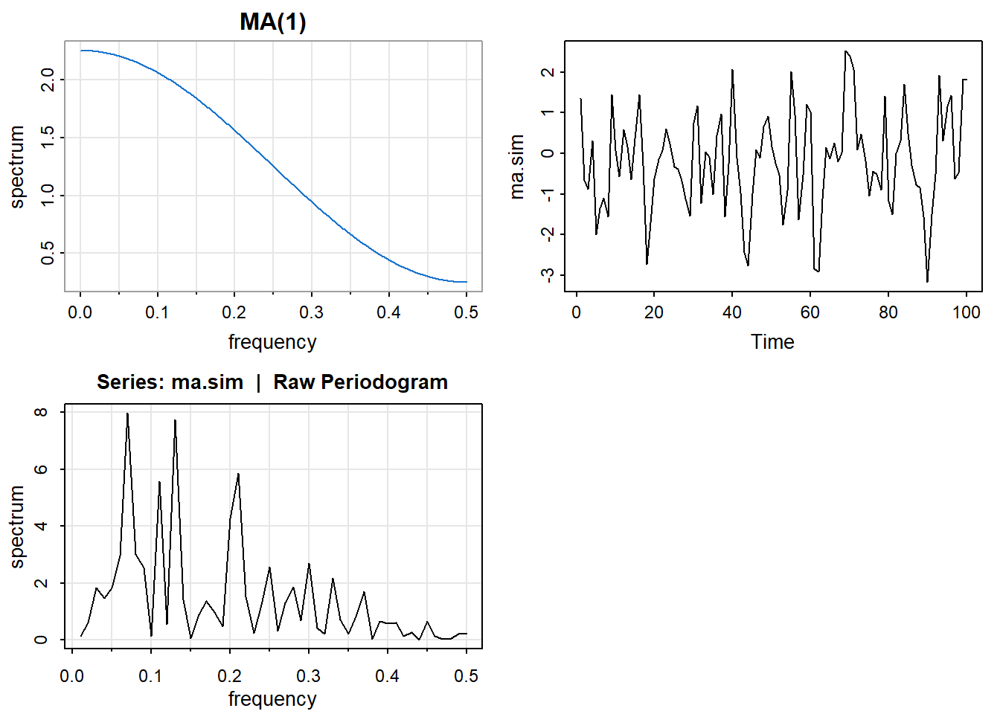
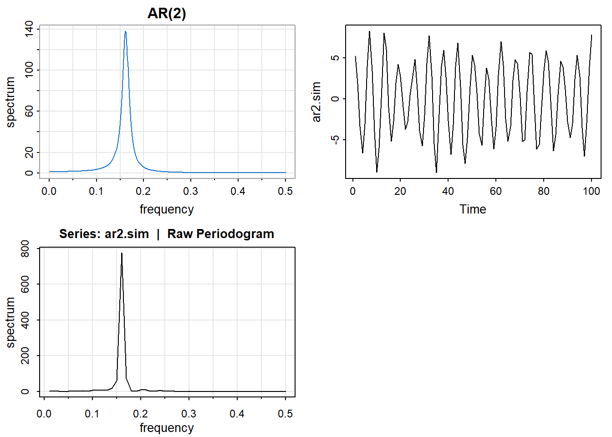
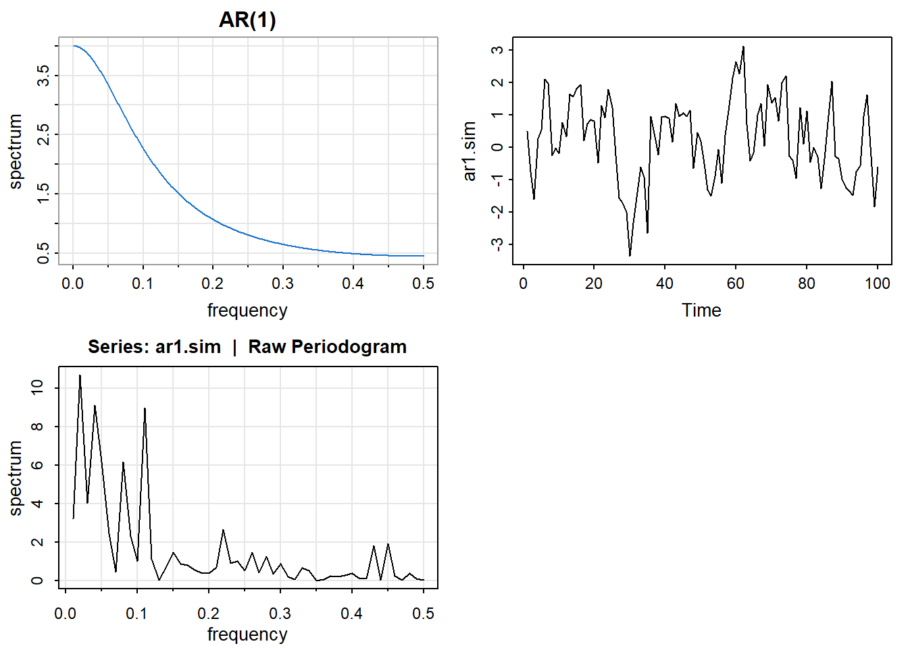
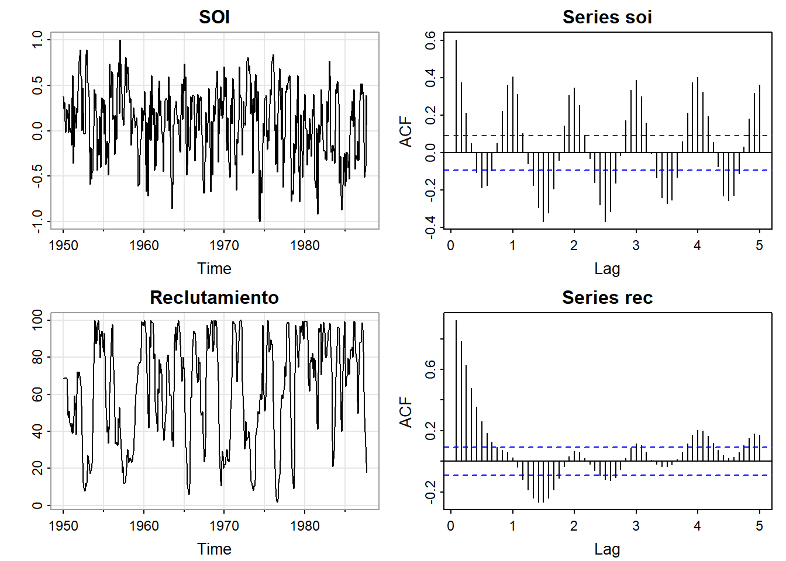
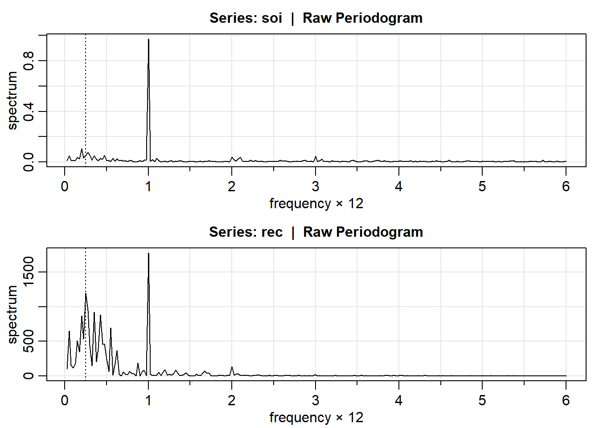

![]()
library(ggplot2)
library(forecast)
library(fpp2)
library(astsa)
library(tidyverse)
library(TSA)Tema 1: Análisis espectral de series temporales(2)
1 librerías
2 Ruido blanco, MA(1), AR(2) y AR(1)
2.1 Ruido blanco
arma.spec(ar = 0, ma = 0 ,main="Ruido blanco", col=4)
w = rnorm(100,0,1)
plot.ts(w, main="")
mvspec(w) 
2.2 MA(1)
par(mfrow=c(2,2))
arma.spec(ar = 0 , ma =.5, main="MA(1)", col=4)
ma.sim <- arima.sim(list(order = c(0,0,1), ma = 0.5), n = 100)
ts.plot(ma.sim)
mvspec(ma.sim) 
2.3 AR(2) con comportamiento periódico
par(mfrow=c(2,2))
arma.spec(ar=c(1,-.9), ma= 0 , main="AR(2)", col=4) #periodico
ar2.sim <- arima.sim(list(order = c(2,0,0), ar = c(1,-0.9)), n = 100)
ts.plot(ar2.sim)
mvspec(ar2.sim) 
2.4 AR(1)
par(mfrow=c(2,2))
arma.spec(ar=c(0.5), ma= 0 , main="AR(1)", col=4) #periodico
ar1.sim <- arima.sim(list(order = c(1,0,0), ar = c(0.5)), n = 100)
ts.plot(ar1.sim)
mvspec(ar1.sim) 
3 SOI y Reclutamiento de peces
Se tiene la serie ambiental de índice de oscilación del sur (SOI, Southern Oscillation Index), y la serie de número de peces nuevos (Reclutamiento) de 453 meses de 1950 a 1987. SOI mide cambios en presión relacionada a la temperatura del superficie del mar en el oceano pacífico central, el cual se calienta cada 3-7 años por el efecto El Niño.
par(mfrow = c(2,2))
tsplot(soi, ylab="", main="SOI")
acf(soi, lag.max = 60)
tsplot(rec, ylab="", main="Reclutamiento")
acf(rec, lag.max = 60)
3.1 Periodograma
par(mfrow=c(2,1))
soi.per = mvspec(soi)
abline(v=1/4, lty="dotted")
rec.per = mvspec(rec)
abline(v=1/4, lty="dotted")
head(soi.per$details) frequency period spectrum
[1,] 0.025 40.0000 0.0092
[2,] 0.050 20.0000 0.0497
[3,] 0.075 13.3333 0.0120
[4,] 0.100 10.0000 0.0086
[5,] 0.125 8.0000 0.0152
[6,] 0.150 6.6667 0.0338tail(soi.per$details) frequency period spectrum
[235,] 5.875 0.1702 0.0031
[236,] 5.900 0.1695 0.0049
[237,] 5.925 0.1688 0.0001
[238,] 5.950 0.1681 0.0013
[239,] 5.975 0.1674 0.0027
[240,] 6.000 0.1667 0.00743.2 SOI
soi.per$details[c(10,40),] frequency period spectrum
[1,] 0.25 4 0.0537
[2,] 1.00 1 0.9722U = qchisq(.025,2)
L = qchisq(.975,2)
# para frecuencia= 1/4
c(2*soi.per$spec[10]/L,2*soi.per$spec[10]/U)[1] 0.0145653 2.1222066# para frecuencia= 1
c(2*soi.per$spec[40]/L,2*soi.per$spec[40]/U)[1] 0.2635573 38.40108003.3 REC
rec.per$details[c(10,40),] frequency period spectrum
[1,] 0.25 4 1197.369
[2,] 1.00 1 1777.745U = qchisq(.025,2)
L = qchisq(.975,2)
# para frecuencia= 1/4
c(2*rec.per$spec[10]/L,2*rec.per$spec[10]/U)[1] 324.5887 47293.5384# para frecuencia= 1
c(2*rec.per$spec[40]/L,2*rec.per$spec[40]/U)[1] 481.9201 70217.1807